In this
document I've gathered information about the communication between PC
and RCX.
There's a lot you
can find on the web, but it's all incomplete, just as this document
will also be incomplete.
Summary 
Communication is done in a
master-slave mode, whereby the RCX is slave (except for messages).
Datatransfers are normally
transported in packages, with leader, trailer and checksums. (Can be
changed).
RTS pin of the
IR-tower must be high for both sending and receiving data.
DTR pin of the IR-tower is not
used.
Normal Baudrate is
2400 Baud, 8 databits, 1 stopbit, odd parity. Baudrate can be doubled
to 4800 Baud.
Standard IR
freqeuncy is 38 kHz, which can be doubled.
If
tower is alive, receiver sometimes fetches lots of data which isn't
there.
There's a lot of
discussion about blowing up the
IR-LED's .
Introduction
In the communication between PC
and RCX the following communication levels can be distinguished:
command
level
packet
level
RS232
level
transmission level (modulation
/ wavelength)
Command
level
At the command level you can
give commands to the RCX (using i.e. NQC or Spirit.OCX) or receive
requested information from the RCX.
There
exists the following basic commands to an RCX
Of course there are also commands
you can give to the software interface (like "TowerAlive"
in Spirit.ocx), but they don't result in a communication between PC
and RCX.
From the RCX to the
PC, the following basic information can be transported
Replies
upon PC-requests (including datalog dumps)
Free
dumps (which are initiated by the RCX itself)
Messages (meant for other
RCX's)
A message is just
an immediate command "F7" followed by the message number
and transmitted in the standard packet format,
so
message 3 is sent as
55
FF 00 F7 08 03 FC FA 05
Message
0 is discouraged, according to Dave Baum.
A remote control command
is just an immediate command "D2" followed by 2 arguments,
with some special rules:
it's
a normal direct command with the code 0xD2 with 2 arguments (page 61
of RCX 2.0 Command Overview)
In
the arguments you may only set 1 bit, so only one command at a time
can be given (if you set more than 1 bit in the arguments, only the
least significant bit is executed)
toggling
of bit 3 of the command (when repeating the same command) is not
necessary
a
motor command can be given at any time
all other commands must be
preceeded by a motor command or a command with both arguments 0
Remote
Control Codes
|
|
must be preceeded by a motor
command or a remote command with arguments 00 00
|
|
00 00 = pre-message for all
except motor commands
00
08 = Motor A forwards
00
40 = Motor A backwards
00
10 = Motor B forwards
00
80 = Motor B backwards
00
20 = Motor C forwards
01
00 = Motor C backwards
|
02 00 = Select Program 1 and Run
it
04 00 = Select Program
2 and Run it
08 00 =
Select Program 3 and Run it
10
00 = Select Program 4 and Run it
20
00 = Select Program 5 and Run it
40 00 = Stop Program and all
motors
|
00 01 = Message 1
00
02 = Message 2
00 04 =
Message 3
80 00 = play Remote Sound
|
Packet
Level
In normal communication all
information is transported in a packet.
Every
command or every complete download is packed in a packet.s
The packet consists of
a
header, always 55 FF 00 (in receiving the first byte "55"
isn't always reliable)
the
databytes, where each databyte is followed by it's complement. So if
you've to send "55 F7", you would have to send "55 AA
F7 08"
the
checksum, that is the sum over all real databytes. Also the checksum
is followed by its complement
RCX never executes same exact
opcode twice in a row, therefor every command has 2 occurences, one
with the third bit set and the other with third bit reset. You've to
toggle this third bit if you want a command sent twice.
RS232
level
from Kekoa Proudfoot: "Bit
encoding is 2400 baud, NRZ, 1 start, 8 data, odd parity, 1stop bit."
|
PC
|
IR-tower
|
name
|
Description
|
Notes
|
|
1
|
1
|
CD
|
Carrier Detect
|
not connected
|
|
2
|
3
|
RD
|
Receive Data
|
RCX==>PC
|
|
3
|
2
|
TD
|
Transmit Data
|
PC==>RCX
|
|
4
|
4
|
DTR
|
Data Terminal Ready
|
connected, but not used
|
|
5
|
5
|
SG
|
Signal Ground
|
|
|
6
|
6
|
DSR
|
Data Set Ready
|
not connected
|
|
7
|
8
|
RTS
|
Ready To Send
|
must be high to receive or send
data
|
|
8
|
7
|
CTS
|
Clear To Send
|
used to detect if tower is
connected to PC,
because
it's connected in the IR-tower to RTS
|
|
9
|
9
|
RI
|
Ring Indicator
|
not connected
|
Transmission
level
from Kekoa: "A '0' is
coded as a 417us pulse of 38kHz IR, a '1' bit is 417us of nothing."
This can be changed to 76 kHz
and/or 25% duty cycle.
Current
through 2 IR diodes on the PC side is 10 mA (short range) or 100 mA
(long range)
I found that
it's slightly different:
Startbit
is "1", but always give a 417 us IR puls
Databits
"0" gives 417 us IR puls, "1" gives 417 us
of nothing
Parity
bit (data = $A1 generates 417 us IR puls)
1 stopbits generate no IR
Design
by John Barnes
This is simple and good design posted by John Barnes at the lugnet
group, which I quote her with his permission. The design is far
more easy (and understandable) then the circuit from Lego.
John
Barnes says:
"This IR Tower design “scavenges” power
from the RS232 port. For ease of construction, I put the power supply
components on a small piece of perf board in the DB9 connector shell
and the rest in a hollowed out brick. I used an old piece of 4
conductor mouse cable between the bnck and the connector.
Functionally is is very simple. On the transmit side, the TXD signal
from the PC “un-resets” the 555 which then makes the
required 38KHz signal which is emitted by the IR LED - use a high
efficiency type. On the receive side, the hard work is done by the IR
detector chip, use Panasonic PNA4602 or PNA4612 removed from it’s
metal shell (obtainable from Digikey). Overall, note that the
apparent common ground line is in fact derived from the negative most
output from the RS232 signals. If you use a ‘scope to check the
thing out, don’t attach the probe’s ground pigtail to
this line, you’ll lose half the supply voltage. This design is
only intended to provide 4 – 8 inches of operating range. It
can be very useful in multiple RCX environments where you want to
minimise interference to other RCXs. I have downloaded the firmware
using this tower as a form of validation."
It's possible to extend the range of this design by lowering the
value of R6 and by adding more IR diodes in series.
For instance
a normal desktop computer can deliver about 20 mA from it's serial
port.
John Barnes about this suggestion:
And adding IR LEDs in series is the best remedy if you
have the volts to drive 'em. You cannot lower R6 too far, the CMOS
555 won't supply all that much current. And the non-CMOS version
won't run in the 50:50 mode as shown. A simply transistor used as a
buffer with the LEDs being returned to the high side would give you
all sort of power if a true powered tower were required.
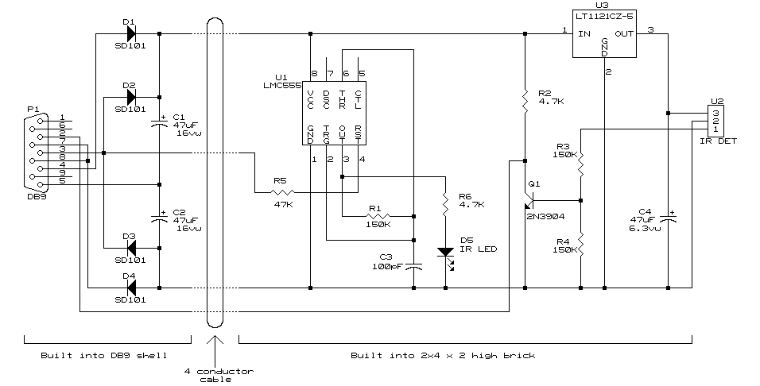
Schematics
Schematics by Mark Bellis
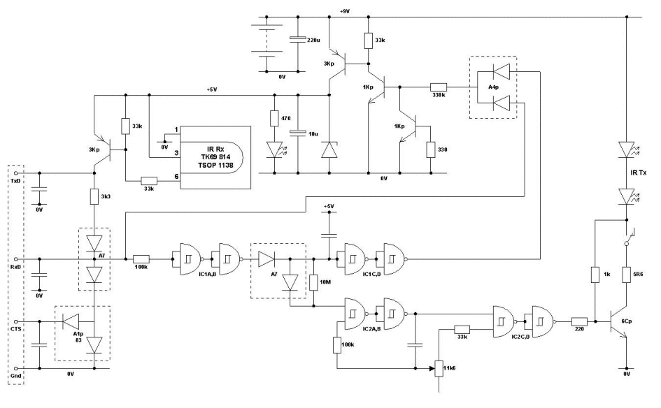
Schematics by John Barnes
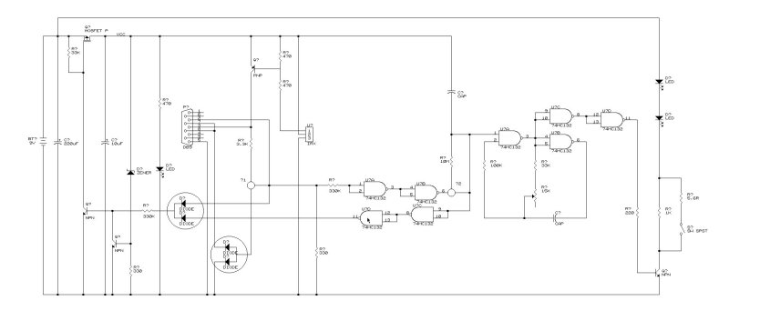
(click on image to enlarge)
Schematics by Hiroki Shirakawa
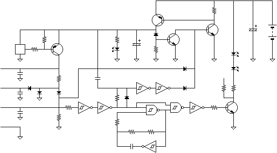
About the
schematics,
I think the
mosfet in the power supply line drawn by John is a voltage regulator,
because the absolute maximum ratings of the IR-receiver (TSOP1138)
specifies 6 Volts (although the limitation could also be done by the
zener and the transistor, which would be bad). According to John
Barnes the mosfet and surrounding circuit act's as an linear voltage
regulator and the specs of this voltage regulator (low drop) are
quiet good so he even used it in some of his last designs.
The missing circles in John's
shematics are probably double diodes, of which only 1 is used, see
the drawing of Hiroki.
In
John's schematic the capacitors at the RS232 connector are missing.
|
Keeping
IR-tower alive
|
IR-tower
without a battery
|
|
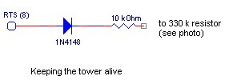
This idea came from John Barnes,
who suggested to use the DTR pin (he had a very good photo too,
but I lost it). I prefer the RTS pin, because when using orginal
software (RIS or spirit.ocx) the tower acts just as before and
only with my own software I have fully control of the "stay
alive" feature.
|
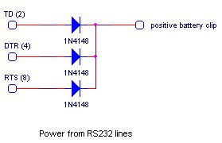
How much current you can draw
from this cirquit is depending on the RS232 port of your computer.
My maximum was 20 mA, so I can
only use the short range.
For
laptops this probably won't work, John Barnes has some
experience with it and says "the RS232 outputs barely conform
to the RS232 standard. And they absolutely do not have enough
capacity to power anything. I suspect most computers which use the
charge pump type RS232 transceivers will suffer from this
problem."
|
|
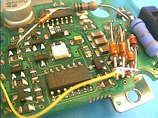
Keep alive and powering from
RS232
|
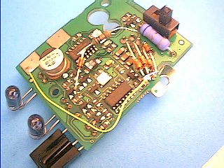
Keep alive and powering from
RS232
|
|
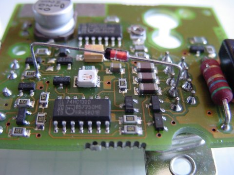
Keep alive from John Barnes
The diode is a standard 1N4148
or 1N914 type. It goes from pin 4 on the
DB9
to the 330k resistor that drives the power on circuitry.
|
|
Hardwire
IR-signals to RCX
Design from Peter
Balch , how found out how to connect RS232 signals direct to
the RCX.
I don't think it's necessary to remove the IR diodes
and it would be very nice if also the IR-detector could stay in
function.
The transmitter and receiver components are at the front of the
RCX:
Unsolder them and put them somewhere safe.
Now solder
a stereo coax cable to the pads. I used one from an old pair of
earphones:
|
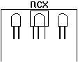
|
|
Any small signal transistors will do. I used a BC639 and BC640
but they're overkill for a job like this. The transistors invert
the signals and advust the voltage levels. The 100n on the signal
from the RCX smooths out the 30kHz signal which is (normally)
modulating the IR signal.
You can use either the 9-pin (female) or 25-pin (female)
connector depending on what your PC wants.
|
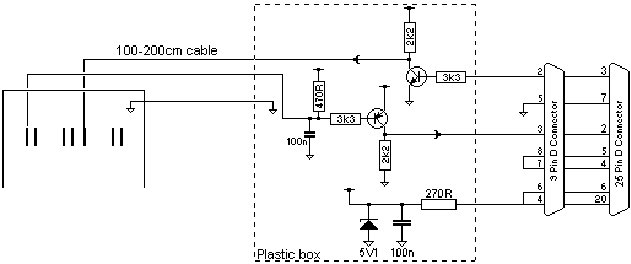
|
> Why did you remove the IR diodes ?
The IR LEDs are
pulsed on and off at 30kHz - that's on top of the
2400bps
serial
signal. I had to remove that 30kHz signal.
That's what the
100nF (on the base of the transistor) is for.
The
time-constant of the 100nF and the 470R has to be just right.
If
the
100nF is too big, the 2400bps deteriorates. If the 100nF
is too small,
the
30kHz gets thorugh to the PC and confuses its
UART.
The RCX pulls the base of the transistor down and the
470R pulls it up.
If
I'd left in the IR LEDs, they would also
pull up the base of the
transistor. I wasn't sure how that would
affect the time-constant.
I dare say you could get it to work.
Leave the IR LEDs in and remove
the
470R. Then adjust the 100nF
value until you get reliable comms with the
PC.
> It
would even be nicer, if also the IR-sensor could be left in
place,
but
I don't know the Lego circuit.
Neither do I.
I assumed that the IR receiver would be driving its
output
both
high and low (rather than a pullup or pulldown resistor). I
removed
it
so that my circuit didn't have to fight with it. Try leaving it
in and
see
what happens.
Peter
Blowing
up the IR-LED's
A lot of people reported blown
IR-LED's, which could be caused by the wrong modifications.
Hiroki Shirakawa and I measured the
peak current through the IR-diodes with fresh battery, long range
output, during normal Lego transfers (data in packets) and we
measured both 100 mA peak current. Realizing that the overal duty
cycle is 25% (0.5 because of 38 kHz modulation and 0.5 because of
balanced databits in the packet) it's not possible to blow the
IR-LEDs !!!
However,
theoretically it could be possible, some remarks:
The
current through the IR-LEDs is limited by a 5.6 Ohm resistor and the
internal impedance of the 9V battery
Typical
values for an IR-LED (from SFH485) forward voltage 1.5V, (worst 1.8V
@ 100 mA)
If
the current through the LED is increased, the forward voltage also
increases (worst 3V @ 1A)
9V
block alkaline batteries are specified to 100 mA max
the 38 kHz oscillator is
started and stopped by every bit change, this is not a good idea
Resuming I think it's possible
to burn out the IR-LEDs if you're doing one or more of the following
things:
connecting
an external power supply, with a higher voltage and/or a lower
internal impedance
running software that doesn't
do bit balancing (the 38 kHz oscillator in the IR tower could start
slow)
Some
notes from others
from Lego
MindStorms Internals
Peter Middlestorb reports
that a learning remote does indeed work. He used a Casio Model 1174
CMD-40 watch.
Robert Eddings says that
the OmniRemote successfully learned and played back the Lego
mindstorms command codes. He has a page
with
a trained OmniRemote.
Kekoa writes:
The
scheme used to transmit data results in an equal number of zero bits
and one bits, allowing a receiver to compensate for a constant
signal bias (caused by ambient
light) simply by subtracting the average signal value. Note that the
header also has an equal number of ones
and
zeros; this warms up the receiver before the real data arrives.
The data portion of each
message starts with an opcode. An opcode is either a request (PC to
RCX) or a reply (RCX to PC). Requests have
0x80
clear, replies have 0x80 set. The reply corresponding to a given
request is the request's complement and vice-versa. Opcodes seem to
come in pairs; that is, there are
two opcodes to specify each request, and there are two opcodes to
specify each reply. These "dual" of a
given
request or reply opcode is the exclusive or of that opcode with 0x08.
Example:
Op 0x10 Alive Request / Op
0xef Alive Response
Op 0x18
Alive Request / Op 0xe7 Alive Response
0x10
and 0xef are complements
0x18
and 0xe7 are complements
0x10
and 0x18 differ only in 0x08 bit
0xef
and 0xe7 differ only in 0x08 bit
form Hiroki
Shirakawa
In the first place, why
being the infrared ray?
Is
because efficiency is better than the general visible photodiode. In
addition, responsiveness calls and it seems that (rate of
reaction is fast and) for the sake of, high speed can do
communication.
Why oscillating?
Rather than the infrared ray diode,
making light up with direct voltage source, because the one
which was blinked with pulse drive can allow big electric current,
because you can obtain big high output, is.
Why 38 [ the kHz ] being?
30 - When it oscillates with the
60kHz, is because the occasion where it detects & expands with
the receptor, noise is easy to grasp little.
In other words, it probably means that those which radiate with 30 -
the 60kHz are little in the natural world and home.
Concerning the method of
taking power source from the RS-23C2c port.
The
experiment which takes the power source of the IR Transmitter from
the serial port of my PC compatible machine was done. As a result, as
a power source from the 4th pin sufficient voltage * electric current
it was found that it can come off. Speaking concretely, about
10V/50mA electric power it seems that can come off. Most, you think
in this there is a difference due to the manufacturer of the
motherboard but. Therefore with saying, everyone who reads this page
remodels directly please do not do kind of that. While +10V has come
out of the 4th pin, while operating the software and the like of RIS
attachment, it seems that is limited. Usually -10V, or it has become
the 0V. Because is, when the 4th pin the + terminal is made to
short-circuit simply, very much it is dangerous.The electric power
which it stabilizes if the remodelling method which can come off is
recognized, we inform. In addition, "it succeeded in remodelling
already! When " with the person who says is, please communicate
by all means.
{kind=link}